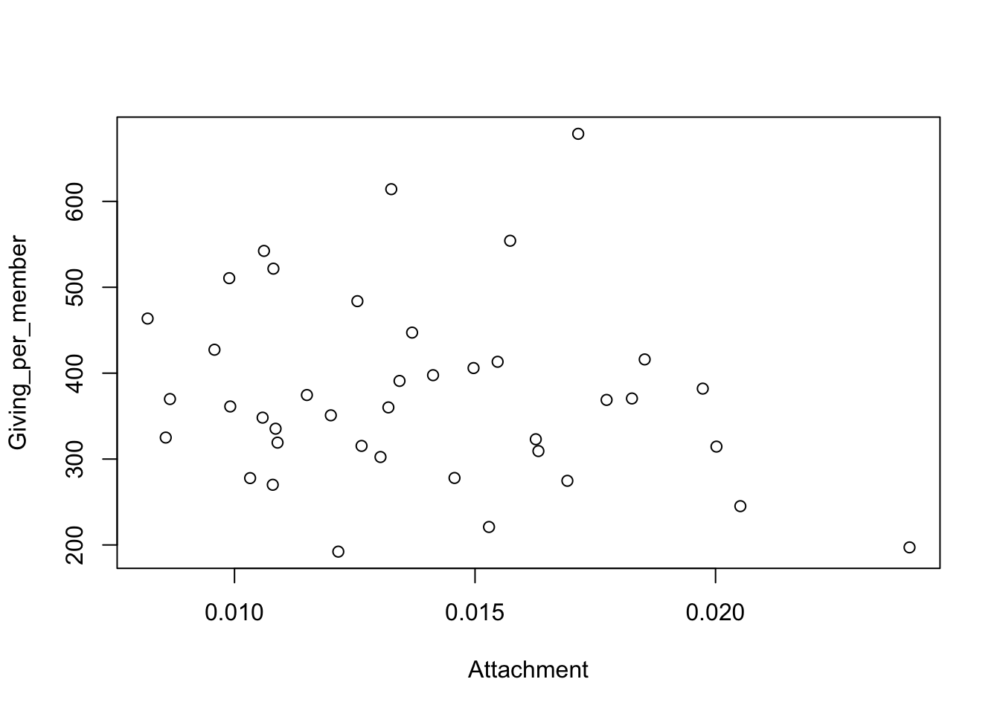
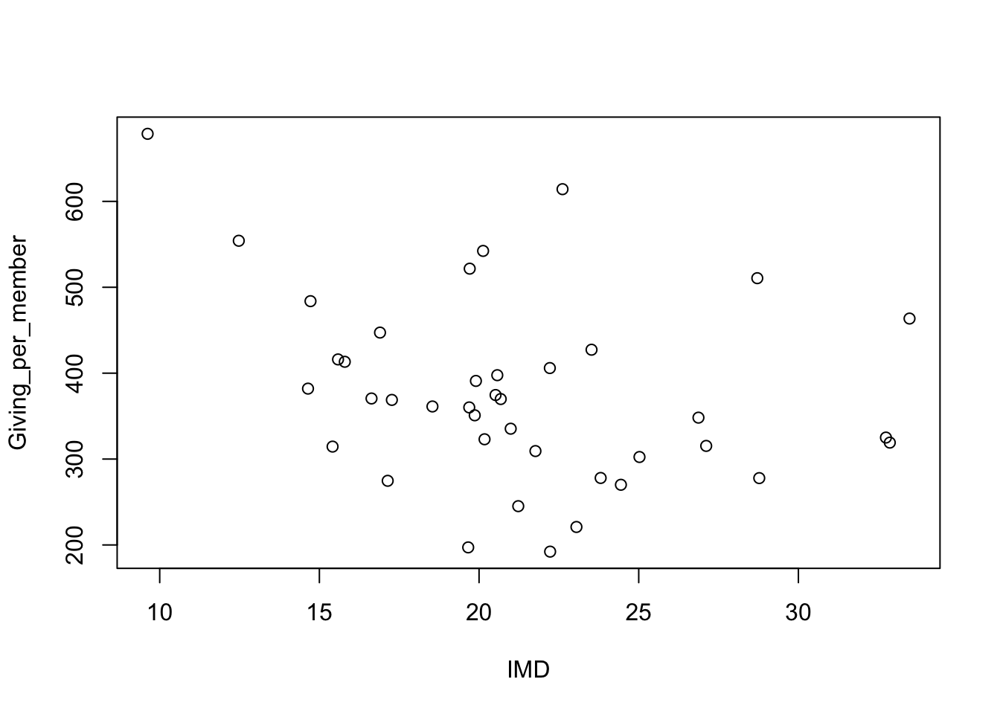

3.3 Collating data from different sources
When the data we need are spread across different sources, collation into a single dataset can be rather messy. The tools of the dplyr package are particularly helpful here. This section also makes use of the readxl package to read Excel spreadsheets.
Example: Giving in the Church of England
The Church of England is a large organisation whose 12,500 parishes, organised into 42 regions called dioceses, cover the whole of England. This gives a good context within which to explore patterns in charitable giving and Pickering (1985) examined this using data from the 1980’s. Prosperity (expressed in employment rate) and attachment (the proportion of the population associated with the church) were identified as important covariates associated with the variations in giving per church member across the country. Interestingly, giving per church member went down as attachment increased. Is this relationship still evident?The Data Services unit publishes a large amount of information about the composition and activity of the church so this provides an opportunity to examine whether these effects remain. However, the information required is spread across multiple files covering attendance, deprivation and giving. You may like to follow these links to look at the form and content of these spreadsheets.
The first task is to collate the information into a single dataset containing the appropriate data. We will focus on 2019 as this is pre-pandemic. The English Index of Multiple Deprivation (IMD) will be used as a measure of regional prosperity. It is appropriate to exclude Europe, the Channel Islands and the Isle of Man, for which some information is not available. These are also regions with unusual characteristics.
library(readxl)
path.attend <- rp.datalink('cofe_attendance_2019')
path.giving <- rp.datalink('cofe_giving_2019')
path.depriv <- rp.datalink('cofe_deprivation_2019')
d.elect <- read_excel(path.attend, sheet = 5, range = 'B4:I47') %>%
select(Diocese = 1, Elect = 3, Worship = 6)The instructions above make use of the read_excel function to read an Excel spreadsheet. This includes helpful arguments to specify which sheet and which block of cells we would like to read from. The select function from the dplyr package then allows us to select out three columns of interest while simultaneously renaming them. The pipe operator discussed in the previous section allows these operation to be combined neatly. Notice that dplyr functions create tibbles. These are dataframes with some extra features.
We can apply this idea when reading the spreadsheets about attendance, giving and deprivation. The deprivation information is actually supplied at a finer level (parish) so the group_by and summarise functions allow us to aggregate to the level (diocese) which matches the information from the other spreadsheets.
d.attend <- read_excel(path.attend, sheet = 6, range = 'B4:D47') %>%
select(Diocese = 1, Attend = 3)
d.giving <- read_excel(path.giving, sheet = 3, range = 'B8:BS49') %>%
select(Diocese = 1, Giving = 19, Givers = 59)
d.depriv <- read_excel(path.depriv, sheet = 2, range = 'A1:AK12408') %>%
select(Diocese = 11, population = 13, IMD = 37) %>%
group_by(Diocese) %>%
summarise(IMD = sum(IMD * population, na.rm = TRUE) /
sum(population, na.rm = TRUE),
population = sum(population, na.rm = TRUE))Before joining these different sets of information togethjer, it would be wise to check that there are no inconsistencies in the way the information has been coded. The anti_join function is very useful for this. Here is identifies some small differences in the names of the dioceses.
## # A tibble: 0 × 3
## # ℹ 3 variables: Diocese <chr>, Elect <dbl>, Worship <dbl>## # A tibble: 3 × 3
## Diocese Giving Givers
## <chr> <dbl> <dbl>
## 1 St.Albans 12579567 15283
## 2 St.Edmundsbury & Ipswich 4614832 8542
## 3 Sodor and Man 447514 623## # A tibble: 2 × 3
## Diocese IMD population
## <chr> <dbl> <dbl>
## 1 St.Albans 14.7 1927579.
## 2 St.Edmundsbury & Ipswich 17.1 679678.That can be fixed by using the mutate and recode functions.
d.attend <- mutate(d.attend, Diocese = recode(Diocese,
'St. Albans' = 'St.Albans',
'St. Edms & Ipswich' = 'St.Edmundsbury & Ipswich'))
d.elect <- mutate(d.elect, Diocese = recode(Diocese,
'St. Albans' = 'St.Albans',
'St. Edms & Ipswich' = 'St.Edmundsbury & Ipswich'))
d.giving <- mutate(d.giving, Diocese = recode(Diocese,
'Sodor and Man' = 'Sodor & Man'))Now we are in a position to join everything together using the full_join function, with a further adjustment to express attachment on a proportional scale and giving on a ‘per member’ scale.
cofe_2019 <- d.attend %>%
full_join(d.elect, by = 'Diocese') %>%
full_join(d.depriv, by = 'Diocese') %>%
full_join(d.giving, by = 'Diocese') %>%
mutate(Attachment = Attend / population,
Giving_per_member = Giving / Elect)Now that the data have been collated into a single dataframe, we are ready to produce some plots which will address the question we began with. There is a lot of variation here. We will revisit this example in Chapter ?? when we discuss the topic of linear models.
plot(Giving_per_member ~ Attachment, data = cofe_2019)
plot(Giving_per_member ~ IMD, data = cofe_2019)
This example further illustrates the power of the tools provided by the dplyr package. These manipulations could be performed through standard R functions but the code is likely to be much longer and more complex.